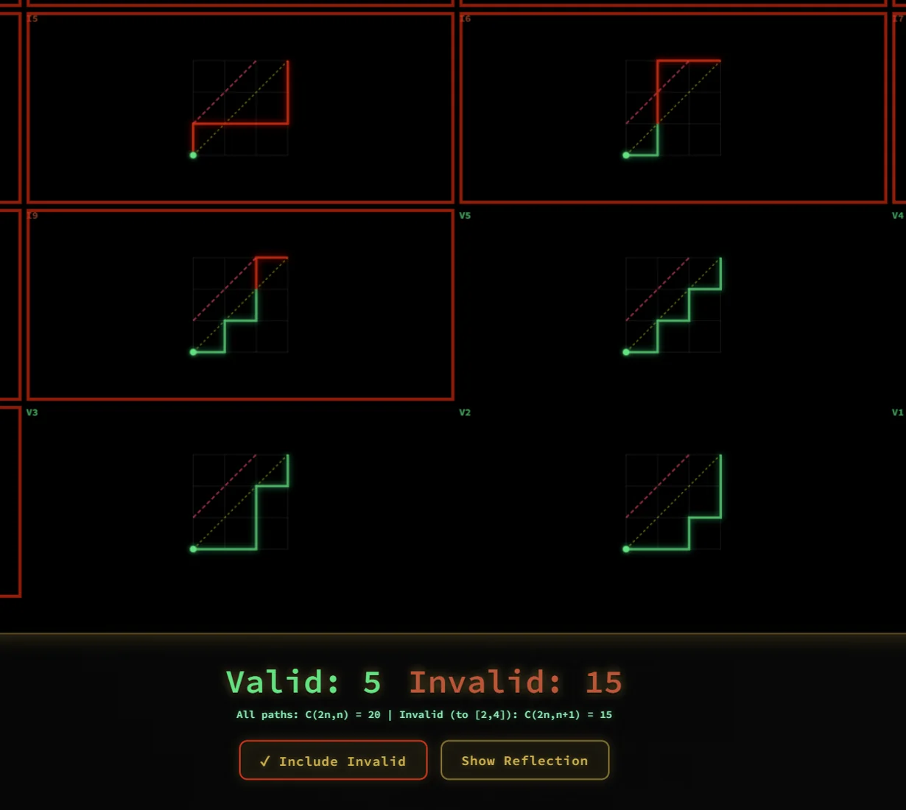
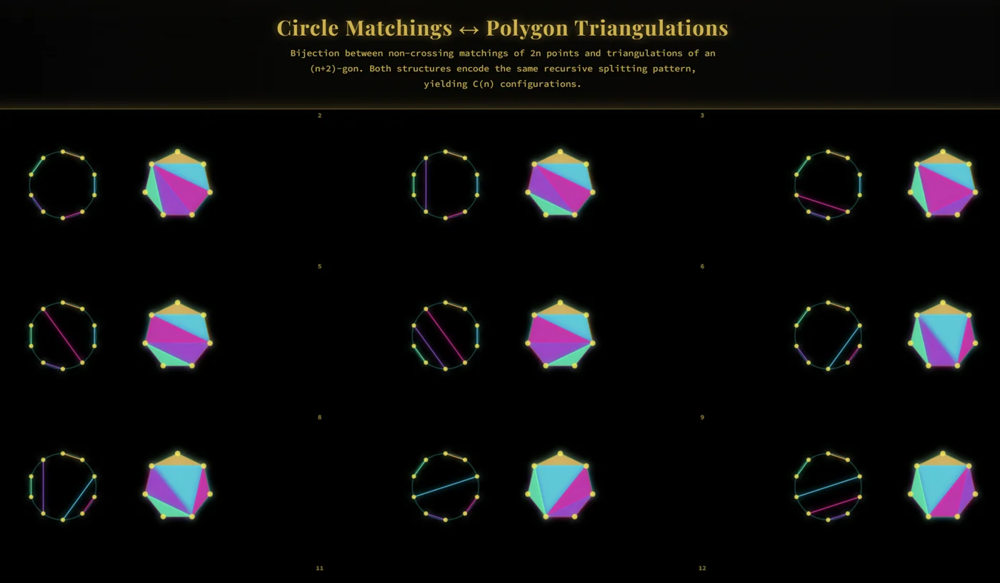
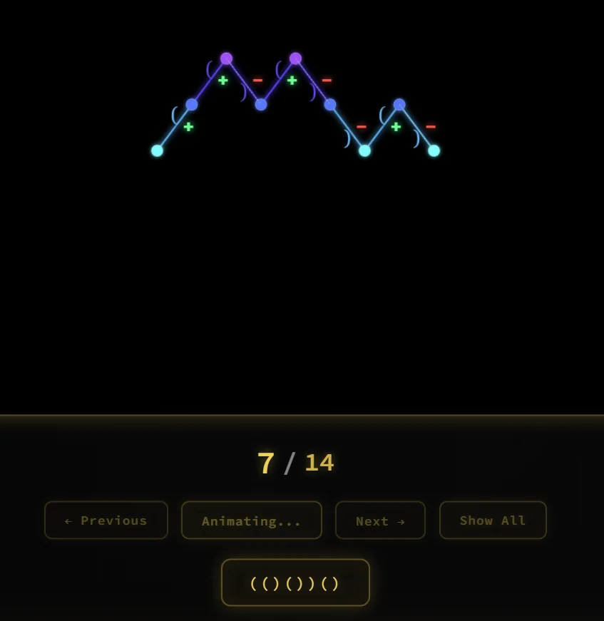

Interactive application
Interactive
Overview · selected highlights
Catalan structures
Trees, parentheses, lattice paths and triangulations share a recursive structure. This focused combinatorics study makes their correspondences concrete and uses the reflection principle to show exactly which paths a Catalan count excludes.
ConstructPairCount
- ( )
Choose an object
Begin with a balanced expression, tree, path or triangulation.
- ↔
Follow a bijection
Translate its structure into another representation.
- Σ
Read the recursion
See how smaller valid objects combine into larger ones.
- ↗
Reflect the failures
Account for lattice paths that cross the forbidden boundary.
A combinatorial building block becomes useful when the correspondence is visible, not just the formula.


